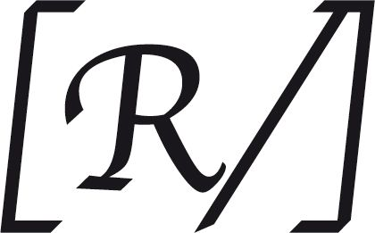

58 (hébr. 59) | Des meurtriers, sauve-moi |
1Du maître de chœur. « Ne détruis pas ». De David. À mi-voix. Lorsque Saül envoya garder sa maison pour le faire mourir.
2Délivre-moi de mes ennemis, mon Dieu ;
de mes agresseurs, protège-moi.
3Délivre-moi des hommes criminels ;
des meurtriers, sauve-moi.
4Voici qu’on me prépare une embuscade :
des puissants se jettent sur moi.
5Je n’ai commis ni faute, ni péché, ni le mal, Seigneur,
pourtant ils accourent et s’installent.
Réveille-toi ! Viens à moi, regarde,
6Seigneur, Dieu de l’univers, Dieu d’Israël :
[lève-toi et punis tous ces païens,

sans pitié pour tous ces traîtres de malheur !

7Le soir, ils reviennent : *
comme des chiens, ils grondent,
ils cernent la ville.
8Les voici, l’écume à la bouche,
l’épée aux lèvres : « Qui donc entendrait ? »
9Mais toi, Seigneur, tu t’en amuses,
tu te ris de tous ces païens.]
10Auprès de toi, ma forteresse, je veille ;

oui, mon rempart, c’est Dieu !
11Le Dieu de mon amour vient à moi :
avec lui je défie mes adversaires.
*
12[Ne les supprime pas, Seigneur,
de peur que mon peuple n’oublie !
Que ta puissance les terrasse et les disperse,
Seigneur, notre bouclier !
13Ils pèchent dès qu’ils ouvrent la bouche ; +
qu’ils soient pris à leur orgueil
puisqu’ils mentent et qu’ils maudissent !
14Dans ta colère, détruis-les ;
détruis-les, qu’ils disparaissent !
Alors on saura que Dieu règne en Jacob
et sur l’étendue de la terre.
15Le soir, ils reviennent : *
comme des chiens, ils grondent,
ils cernent la ville.
16Ils vont en quête d’une proie, *
affamés, hurlant dans la nuit.]
17Et moi, je chanterai ta force,
au matin j’acclamerai ton amour.
Tu as été pour moi un rempart,
un refuge au temps de ma détresse.
18Je te fêterai, toi, ma forteresse :
oui, mon rempart, c’est Dieu,
le Dieu de mon amour.